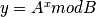

Conclusion¶
Summary: Important Points¶
On the subject of function timing, timing several executions of the same function is often helpful in eliminating system noise. However, do not assume that taking an average of the timings is useful. Often it is simplest to take the minimum of a set of timings as representative. It is possible to switch off garbage collection in Python while timing functions, but this doesn’t remove all other system noise from the measurement.
There are often two issues related to errors: knowing what error has taken place and sidechannels
such as timing that allow an attacker to guess the error. The code that implements pwcheck() deals
with the first of these, its header includes:
#ifdef DEBUG
#define ERROR_NAME_SHORT 1
#define ERROR_NAME_CHARS 2
#define ERROR_PW_SHORT 3
#define ERROR_PW_CHARS 4
#define ERROR_PW_LEN 5
#define ERROR_PW_WRONG 6
#else
#define ERROR_NAME_SHORT 1
#define ERROR_NAME_CHARS 1
#define ERROR_PW_SHORT 1
#define ERROR_PW_CHARS 1
#define ERROR_PW_LEN 1
#define ERROR_PW_WRONG 1
#endif
The unit test for the code must be able to ensure that all these errors are correctly discovered, so when DEBUG is set a different error code is reported for each type of error. However, when the software is deployed only a single error type is reported for any error.
Unfortunately this software is not as careful about timing and testing a single character at a time signals where in the string the password is in error, allowing the possibility of discovering a password one character at a time. There are two common approaches to resolving this problem; the simplest is to ensure that every test takes the same time regardless of the input. This is easy to achieved in an approximate sense - e.g. every password is hashed even if it does not meet the character policy - but less easy to achieve in the internal calculations of the algorithm, as noted below for cryptography.
The second option is to confuse an attacker by adding random amounts of time to the execution of critical functions. Since the time needs to be greater than the variance in the underlying process perhaps a pragmatic approach is to try to ensure that execution times are approximately equal and then add random fluctuations.
A difficulty with padding to a fixed time or random blinding is ensuring that any fake times are not observable,
for example if the attacker is able to observer a quiescant system due to padding with sleep().
The simple timing attack used here should not be feaisble against a practical password system but such techniques have been used against locks and some protocols, and they are an important part of an attacker’s discovery strategy for injection attacks against databases.
A close relation to these attacks are more sophisticated side-channel attacks against cryptographic algorithms. Consider this function, a common element of public key systems:

The obvous implementation approach is to repeatedly square A mod B and if the relevant bit is set in x to multiply this value into a result:
res = 1
while x:
if x & 1:
res = (res * A) % B
A = (A * A) % B
x = x >> 1
Each loop of the function squares A but peforms the second mod multiply only if a bit is set in x. An attacker able to somehow observe information associated with the multiplications (power, radio etc) will be able to determin how many bits are set in x, or perhaps even which bits are set. Vulnerabilities of this sort are proving difficult to defend if attackers have near physical access to devices such as mobile computers and smart-cards.
Further Reading and References¶
This book covers a whole range of issues starting with basic hardware and algorithms and working toward what can be discovered from network protocols. It is written in an unusual and very engaging style:
Zalewski, Michal. Silence on the wire: a field guide to passive reconnaissance and indirect attacks. No Starch Press, 2005.
”... just about any process involving information has inherrent security implications, which are visible to us the moment we look beyond the scope of the goal the process tries to achieve. The art of understanding security is simply being able to cross the line and look from a different perspective.”
This surveys the problem of leakage from cryptographic algorithms:
Koeune, François, and François-Xavier Standaert. “A tutorial on physical security and side-channel attacks.” In Foundations of Security Analysis and Design III, pp. 78-108. Springer Berlin Heidelberg, 2005.
“A recent branch of cryptography focuses on the physical constraints that a real-life cryptographic device must face, and attempts to exploit these constraints (running time, power consumption, . . . ) to expose the device’s secrets. This gave birth to implementation-specific attacks, which often turned out to be much more efficient than the best known cryptanalytic attacks ...”